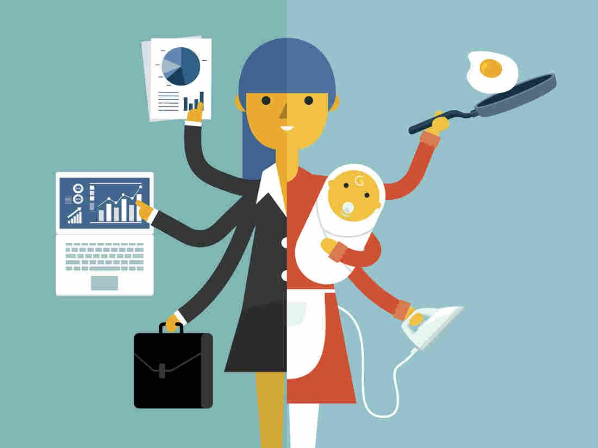
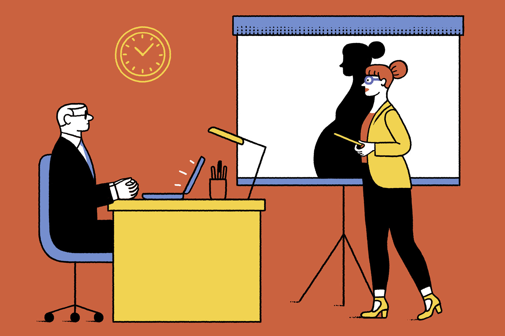

Causes
In General the causes of gender inequality differ between countries and are
shaped by historical, cultural, and political factors that limit women's job prospects.
Steryotype
In the context of job opportunities, gender stereotypes can influence the hiring process, promotion decisions, and career advancement opportunities. For example, women may be perceived as less competent, less ambitious, or less committed to their careers than men, based on gender stereotypes.
Unfairness
Although Palestinian women often get better education than men, their career prospects are worse than men's. As a result, young female graduates are particularly forced to accept jobs that do not match their qualifications.
Bias

According to a UN report that collected data from 75 countries, 90% of men and women
hold some bias against women - with almost half of the respondents believing that men
make stronger political leaders and business
Discrminination
Many women in Palestine suffer from discrimination in the workplace, represented by the opportunities they receive, the wages they receive, and the promotions available to them. Women also face other challenges such as sexual assault and harassment in the workplace, which negatively affect the level of equality at work.